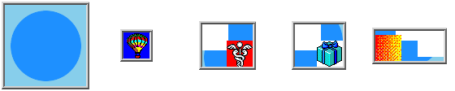

- Index
-
 ImageMagick Examples Preface and Index
ImageMagick Examples Preface and Index
-
Known and Fixed Bugs Index
The GIF animation operators of IM has been problem area
for users for a very long time. I know I have been wrestling
with them since version 4. The following details the long time
problems that existed at the time I myself fixed the bugs, and
expanded the GIF animation operators, available. Sometimes you
just have to fix things yourself. :-) This page is for
reference for older IM users who may still have to deal with
this bug. The examples on this page have not been re-created
when/if the bug was fixed.
Coalesce Bugs -- Fixed IM v6.2.6-1
IM has in general
always work fine for animations that only overlays images onto
the results of the last image output. These animations are
typically fully opaque (no transparent pixels) and are
generated using either a "
-dispose"
setting of '
Undefined' or '
None'. However
for the other two forms of animation "
-dispose"
methods, '
Background'
and '
Previous',
the "
-coalesce"
function did not work properly to generate the correct look of
the animation at each frame. The major problem with these
methods was that pixels in the next frame generated could be
cleared back to a transparent color, something that just
overlaying the next frame will not achieve. The reslt was that
the colesced animation did not have the same look as the
original animation. For example here is a '
Background'
disposal animation, which had the worse results for
"
-coalesce"
bugs.
convert -dispose none -delay 0 \
-size 100x100 xc:skyblue \
-fill dodgerblue -draw 'circle 50,50 15,25' \
-dispose background -delay 100 \
-page +5+10 balloon.gif \
-page +35+30 medical.gif \
-page +62+50 present.gif \
-page +10+55 shading.gif \
-loop 0 canvas_bgnd.gif
|
|
|
Which for IM version 6.2.2 produced the following
"
-coalesce"
result.
convert canvas_bgnd.gif -coalesce canvas_bgnd_coalesce_old.gif
montage canvas_bgnd_coalesce_old.gif -tile x1 -geometry '+2+2' \
-background none -bordercolor none canvas_bgnd_coal_old_frames.gif
|
|
|
As you can see the results was incorrect, with the
background being cleared to the background color. In fact any
animations involving transparency has problems such as this.
However from IM version 6.2.6-1, "
-coalesce"
now produces the correct frames, and sets the disposal methods
for the coalesced frames so that the animated form also works
exactly like the original animation.
convert canvas_bgnd.gif -coalesce canvas_bgnd_coalesce.gif
montage canvas_bgnd_coalesce.gif -tile x1 -geometry '+2+2' \
-background none -bordercolor none canvas_bgnd_coal_frames.gif
|
|
|
It has taken a very long incremental testing to reach
this point. Getting the appropriate '
Background'
disposal effects, and setting the "
-dispose"
method for the new coalesced animation is not a simple matter.
All these "
-coalesce"
problems were fixed in version 6.2.6-1.
Deconstruct Bug - Replacement operator IM
v6.2.6-3
Finding any "
-deconstruct"
problems is difficult unless "
-coalesce"
doing the right job. However "
-deconstruct"
original purpose was to find the differences from one frame to
another, and this is can be done without any need to look at or
understand GIF animation "
-dispose"
methods. For example, given the above montage of a correctly
coalesced '
Background'
disposal animation...
The "
-deconstruct"
operator will generate the following frames...
convert canvas_bgnd_coalesce.gif -deconstruct canvas_bgnd_deconst.gif
convert canvas_bgnd_deconst.gif -bordercolor none -frame 4x4+2+2 miff:- |\
montage miff:- -tile x1 -geometry '+2+2' \
-background none -bordercolor none canvas_bgnd_dec_frames.gif
|

The actual frame images generated by "
-deconstruct"
is correct, as they do show the rectangular area that has
changed in the animation. And in fact using "
-deconstruct"
on animations which only overlay the changes from one frame to
the next will work fine for a disposal method of
'
None'.
However as you can see from the animation of 'Deconstructed'
images that were generated (see right), they do
not work
correctly in a GIF animation.
This problem will never be corrected!
This problem was fixed in IM v6.2.6-3, by providing a new
"
-layers
OptimizeFrame"
method, that not only deconstructs the image but trys to find
the best "
-dispose"
method to frame optimize the animation correctly.
{kind=link}
{kind=link}
{kind=link}
{kind=link}
{kind=link}
{kind=link}
{kind=link}